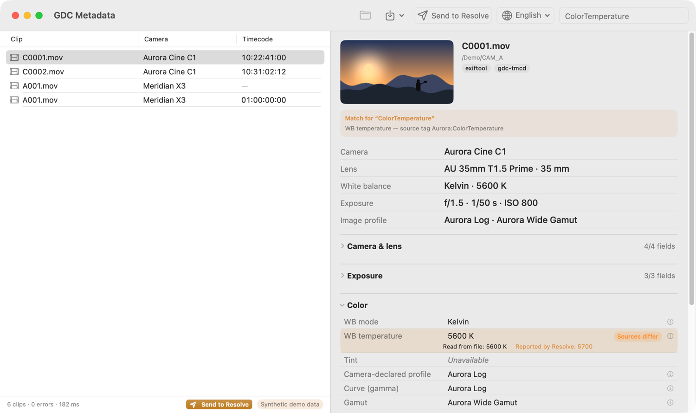
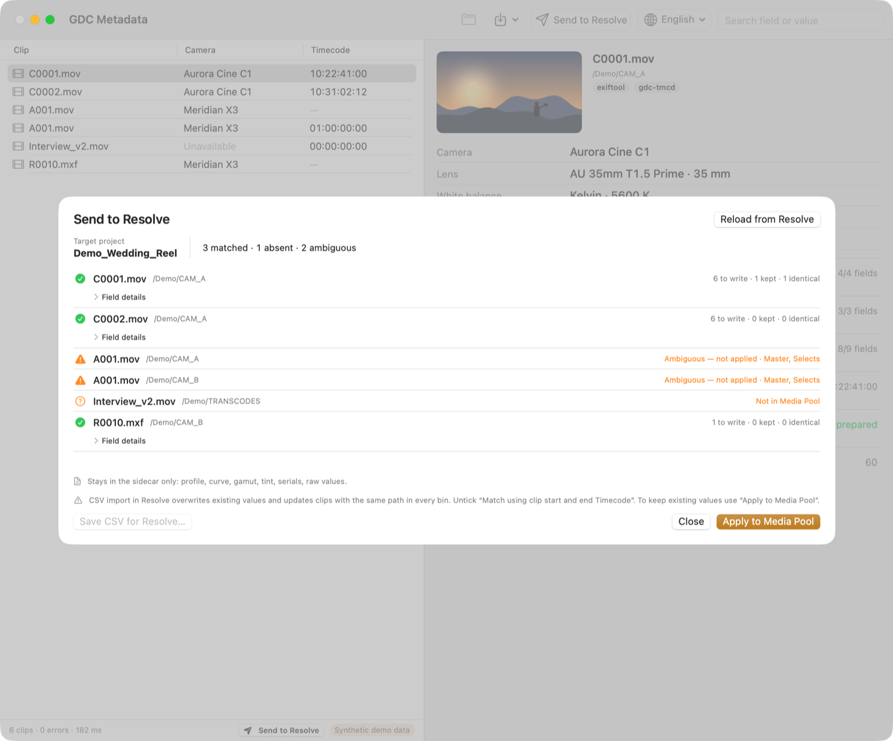

GDC Metadata
Gratuit · macOS · RO / EN / ES
Citește camera, obiectivul, expunerea, balansul de alb, profilul de imagine și timecode-ul din foldere multi-cameră, arată de unde vine fiecare valoare și le trimite în Media Pool din DaVinci Resolve. Totul rămâne pe Mac; originalele nu sunt modificate.
Descarcă pentru macOS Versiunea 0.1.0 · gratuit · DMG semnat și notarizat
Folder → inspector

Găsește orice valoare

Trimite în Resolve

Mișcare și stabilizare

Cerințe
- macOS 14 sau mai nou.
- ExifTool (de exemplu: brew install exiftool).
- Python 3 din Xcode Command Line Tools — doar pentru trimiterea în Resolve.
- DaVinci Resolve pornit, cu External scripting setat pe Local — doar pentru trimiterea în Resolve.
- Câmpurile goale din Resolve se scriu; valorile existente se păstrează; un clip din mai multe bin-uri e omis ca ambiguu (verificat în Resolve după redeschiderea proiectului).
- CSV e o alternativă, dar importul din Resolve poate suprascrie valorile existente, iar la nume de fișier duplicate fiecare clip cu acel nume primește aceleași valori. Opțiuni verificate: Match using filename bifat, timecode start/end debifat.
- Lângă fiecare clip se scrie un sidecar <clip>.gdc-metadata.json; originalele sunt doar citite.
Ghid de utilizare · GitHub · Licență MIT · © 2026 Cristi Gordaș
Toate imaginile folosesc date demo sintetice.